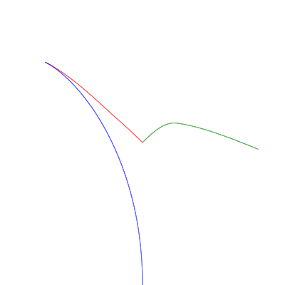

另见
racing.html tricky 策略结果
另见
racing.html tricky 策略结果二维平面内，所有生物均视为点。两只羊在与狼距离为1的同一点上。 狼的速度是1，羊的速度是0.5. 所有生物同时、连续的移动，瞬时反应。羊和狼的距离为0时会被吃掉。 狼想最小化吃掉两只羊所需的时间，羊想最大化这个时间。 请问它们该怎么移动？狼吃掉两只羊需要多少时间？
原始问题链接: 你先撤，我掩护！两羊一狼问题
狼需要在尽量短的时间捉到两只羊. 先追赶距离最近的一只羊, 捉到后再捉另外一只.
假定 A 羊距离狼 W 更近一些, B 羊远一些. 则 A 羊选择的方向应该让 ||WA|| + ||AB|| 最大化.
||WA|| + ||AB|| 相等的曲线为以 W 和 B 为焦点的椭圆, 所以 A 羊应当选择以 W 和 B 为焦点过 A 点的椭圆的法线方向, 远离 W 和 B. 而椭圆的法线方向即 ∠WAB的角分线. 如图:
而 B 羊选择尽量远离 A 羊的方向, 使得 ||AB|| 最大.
结果如图  另见 racing.html greedy 策略结果
在时刻 1.775 时狼在坐标 (-0.6824966234801522, 0.5629660456000858) 捉到 A 羊, 此时 B 羊坐标 (0.8119642206777624, -0.04730746482959347), 两羊距离 1.6142636006096867, 总时间 5.003527201219288
实现见 greedy.js
如果预先知道 A 羊被捉时 A 羊的位置 (记为 F) 和 B 羊的位置 (记为 G). 则 A 羊应选择使 ||WA|| + ||AG|| 最大的方向, 而 B 羊应当尽量选择远离 F 的方向, 同时保证 ||WB|| ≤ ||WA||.
结果如图 另见
racing.html tricky 策略结果
在时刻 1.819 时, 狼在坐标 (-0.6467803614726987, 0.6345802337671108) 捉到羊 A. 此时羊 B 位于 (0.7832758424369813, -0.10277986541692728), 两羊相距 1.6089626043538923 总时间 5.036925208707695.
实现见 tricky.js.